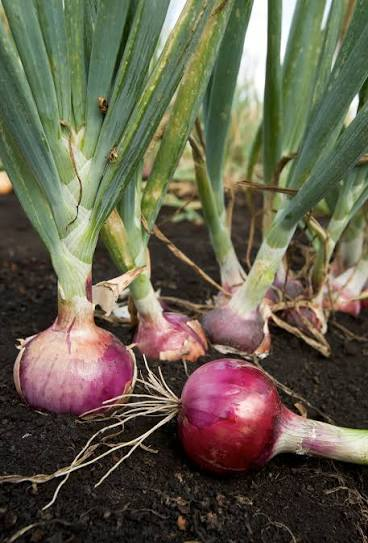

Lechuga
Ideal para ensaladas y una alimentación saludable.

Tomate
Fruto utilizado en ensaladas y diferentes comidas.

Cebolla
Planta que aporta sabor a nuestras preparaciones.

Hierbas aromáticas
Plantas que aportan aroma y sabor a los alimentos.